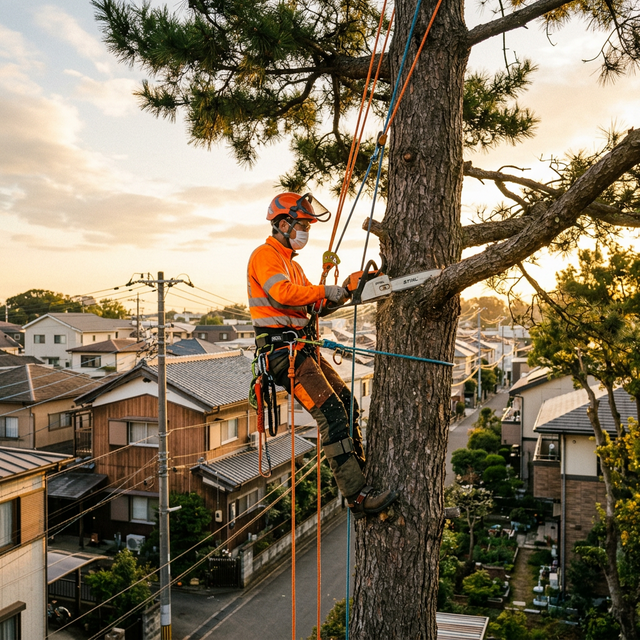
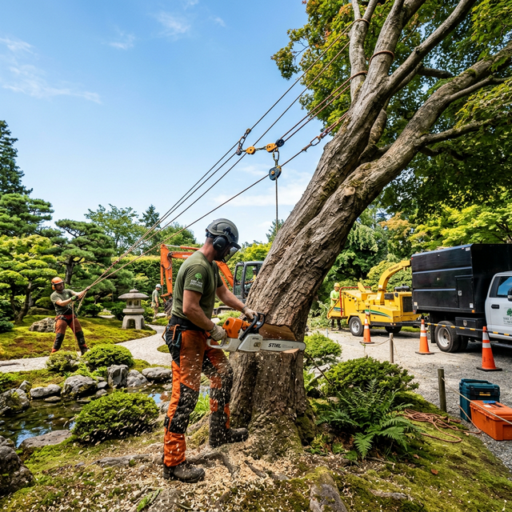
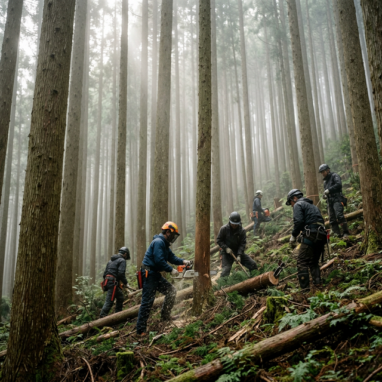
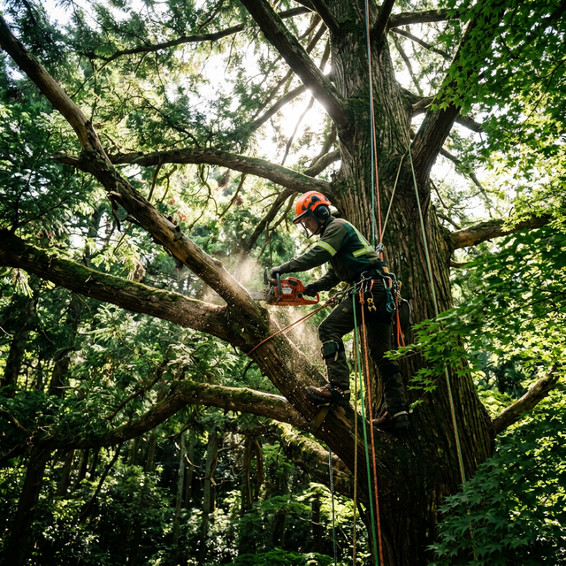

重機が入れない場所、電線の近く、隣家に囲まれた高木──
どんな困難な現場でも、アーボリスト技術で安全・確実に伐採します。
竜樹伐採が提供する3つの専門サービス

メイン木に直接登り、ロープワークを駆使して安全に伐採。重機が入れない狭い場所、電線の近く、 建物に囲まれた高木など、通常の方法では対応できない現場をお任せください。

庭木の伐採から大径木の伐倒まで幅広く対応。伐採後の処分・搬出まで一貫して行います。 枯れ木や倒木の緊急対応もお気軽にご相談ください。

間伐・除伐・搬出など森林整備全般に対応。山林の管理でお困りの方、自治体・法人様からの ご依頼も承ります。健全な森づくりをサポートします。
実際の作業の様子をご紹介します
隣家に囲まれた高さ15mのケヤキをクライミングで伐採。狭小地のため全てロープワークで搬出。

電線に枝が接触していた大径クスノキを、停電なしで安全に伐採。関電とも連携対応。
手入れが困難になった庭木5本を伐採・抜根。跡地を平坦に整地して完了。
30年間放置されていた杉林の間伐作業。光が入り健全な森林へと再生。
倒木の危険があった境内の枯れた大クスを、建物を傷つけずに安全に撤去。
台風で道路に倒れた大木を緊急で撤去。通報から3時間で通行可能に復旧。
安全と確実さで、信頼をいただいています
木に直接登り、ロープとクライミング技術を駆使して伐採するアーボリスト技術。 重機が入れない場所でも問題なく対応できます。
創業3年ですが、代表は8年以上伐採・林業の現場に携わってきたベテラン。 豊富な経験で安全かつ確実な施工をお約束します。
奈良県奈良市を拠点に、大阪・京都・兵庫・三重・和歌山まで関西全域をカバー。 遠方のご相談もお気軽にどうぞ。
現地調査のうえ、作業内容を丁寧にご説明し、明確なお見積もりをご提示。 追加料金の心配はありません。見積もりは無料です。
一般住宅のお庭の木1本から、自治体・法人様の大規模な森林整備まで、 規模を問わず柔軟に対応いたします。
伐採だけでなく、枝葉や幹の搬出・処分まで一括でお任せいただけます。 お客様の手間を最小限に抑えます。
実際にご依頼いただいたお客様からの声をご紹介します
「隣の家に枝がかかっていて困っていました。他の業者に断られた案件でしたが、 竜樹伐採さんはすぐに対応してくれました。木に登って手際よく作業してくれて、 本当に助かりました。」
「台風で大きな木が傾いて道をふさいでしまい、急遽お願いしました。 迅速に駆けつけてくださり、あっという間に撤去していただけました。 プロの仕事だと感じました。」
「所有している山林の間伐をお願いしました。丁寧に現地を見てくれて、 見積もりも分かりやすく説明していただけて安心でした。 仕上がりも大変満足しています。」
正確な料金は現地調査後にお見積もりいたします。
まずはお気軽にご相談ください。見積もり無料です。
高さ 3m未満
高さ 3m〜5m
高所・困難な現場
高さ 5m以上
※ 上記は目安料金です。木の太さ、周辺環境、アクセス状況により変動します。
※ 処分費・搬出費は現場により別途お見積もりいたします。
※ 抜根をご希望の場合は別途費用がかかります。
はい、現地調査・お見積もりは完全無料です。お気軽にご相談ください。LINEからも受け付けています。
奈良県奈良市を拠点に、大阪・京都・兵庫・三重・和歌山など関西一円に対応しています。遠方の場合もまずはご相談ください。
特殊伐採とは、クレーンや重機が入れない場所で、作業員が木に直接登り、ロープや専用器具を使って安全に枝や幹を切り下ろす伐採方法です。電線の近くや住宅の隙間など、通常の方法では対応できない現場で活躍します。
もちろんです。庭木1本から承ります。小さな作業でもお気軽にご依頼ください。
はい、伐採した枝葉や幹の搬出・処分まで一貫して対応いたします。処分費は別途お見積もりとなります。
台風や強風による倒木など、緊急のご依頼にもできる限り対応いたします。まずはお電話またはLINEでご連絡ください。
はい、法人様・自治体様からのご依頼も多数いただいております。山林整備や大規模な伐採作業もお任せください。
まずはお気軽にご相談ください。LINEからでもOKです。